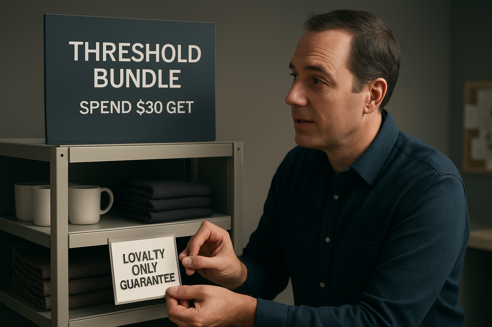

<!DOCTYPE html>
<html lang="en">
<head>
    <meta charset="utf-8" />
    <meta name="viewport" content="width=device-width, initial-scale=1" />
    <title>How Value Shoppers Changed December | Signal-Driven Brand Collaborations</title>
    <style>
        :root {
            --bg: #f8f8f2;
            --paper: #ffffff;
            --text: #1b1f2b;
            --muted: #6c7283;
            --accent: #0a4c6a;
            --border: #ebedf5;
            --mono: "IBM Plex Mono", "SFMono-Regular", Consolas, "Liberation Mono", Menlo, monospace;
            --serif: "Source Serif 4", "Spectral", Georgia, "Times New Roman", serif;
            --sans: "Source Sans 3", "Inter", -apple-system, BlinkMacSystemFont, "Segoe UI", Helvetica, Arial, sans-serif;
            --font-base: clamp(1rem, 0.94rem + 0.3vw, 1.15rem);
            --line-base: 1.7;
            --h1: clamp(2.2rem, 1.6rem + 1.2vw, 3rem);
            --h2: clamp(1.4rem, 1.2rem + 0.4vw, 1.65rem);
            --h3: clamp(1.15rem, 1.05rem + 0.2vw, 1.35rem);
        }

        * { box-sizing: border-box; }

        body {
            margin: 0;
            background: var(--bg);
            font-family: var(--sans);
            color: var(--text);
            line-height: var(--line-base);
            font-size: var(--font-base);
        }

        .page {
            max-width: 860px;
            margin: 0 auto;
            padding: 48px 24px 72px;
        }

        header {
            background: var(--paper);
            padding: 48px;
            border-radius: 24px;
            box-shadow: 0 18px 60px rgba(13, 21, 45, 0.08);
            border: 1px solid var(--border);
        }

        h1 {
            font-family: var(--serif);
            font-size: var(--h1);
            margin: 0 0 12px;
            line-height: 1.2;
        }

        h2, h3, h4 {
            font-family: var(--serif);
            margin-top: 48px;
            margin-bottom: 12px;
            line-height: 1.25;
        }

        p {
            margin: 0 0 20px;
            font-size: var(--font-base);
        }

        .subtitle {
            font-size: 1.15rem;
            color: var(--muted);
            margin-bottom: 18px;
        }

        .meta {
            display: flex;
            flex-wrap: wrap;
            gap: 16px 32px;
            margin-top: 24px;
            padding-top: 20px;
            border-top: 1px solid var(--border);
        }

        .meta-item {
            min-width: 160px;
        }

        .meta-label {
            text-transform: uppercase;
            letter-spacing: 0.08em;
            font-size: 0.75rem;
            color: var(--muted);
        }

        .meta-value {
            font-size: 1rem;
            margin-top: 4px;
        }

        .updated {
            margin-top: 32px;
            font-size: 0.9rem;
            color: var(--muted);
        }

        .hero-figure {
            margin: 28px 0 0;
            border-radius: 24px;
            overflow: hidden;
            border: 1px solid var(--border);
            box-shadow: 0 24px 70px rgba(13, 21, 45, 0.09);
            background: #000;
        }

        .hero-figure img {
            width: 100%;
            display: block;
            object-fit: cover;
            max-height: 480px;
        }

        .hero-figure figcaption {
            padding: 16px 28px;
            font-size: 0.95rem;
            color: var(--muted);
            background: var(--paper);
        }

        .hero-meta {
            display: flex;
            flex-wrap: wrap;
            gap: 12px 24px;
            margin-top: 12px;
            font-size: 0.85rem;
            text-transform: uppercase;
            letter-spacing: 0.08em;
            color: var(--muted);
        }

        .hero-meta span strong {
            display: block;
            color: var(--text);
            font-size: 0.95rem;
            letter-spacing: 0;
            text-transform: none;
        }

        .inline-visual {
            margin: 36px 0;
            border: 1px solid var(--border);
            border-radius: 20px;
            overflow: hidden;
            background: var(--paper);
            box-shadow: 0 16px 40px rgba(13, 21, 45, 0.07);
        }

        .inline-visual img {
            width: 100%;
            display: block;
            object-fit: cover;
        }

        .inline-visual figcaption {
            padding: 18px 24px 22px;
        }

        .inline-visual .label {
            font-size: 0.85rem;
            text-transform: uppercase;
            letter-spacing: 0.08em;
            color: var(--muted);
        }

        .inline-visual .description {
            font-size: 1rem;
            margin-top: 6px;
            color: var(--text);
        }

        .inline-visual .metrics {
            margin-top: 14px;
            display: flex;
            flex-wrap: wrap;
            gap: 8px;
        }

        .inline-visual .metrics span {
            font-size: 0.8rem;
            text-transform: uppercase;
            letter-spacing: 0.08em;
            border: 1px solid var(--border);
            padding: 4px 8px;
            border-radius: 999px;
            color: var(--muted);
            background: rgba(10, 76, 106, 0.04);
        }

        .inline-visual .metrics-focus {
            margin-top: 8px;
            font-size: 0.85rem;
            color: var(--muted);
        }

        main {
            margin-top: 42px;
            background: var(--paper);
            padding: 48px;
            border-radius: 24px;
            border: 1px solid var(--border);
            box-shadow: 0 24px 70px rgba(13, 21, 45, 0.07);
        }

        main h2 {
            font-size: var(--h2);
            border-bottom: 1px solid var(--border);
            padding-bottom: 12px;
        }

        blockquote {
            border-left: 4px solid var(--accent);
            padding-left: 18px;
            margin: 24px 0;
            color: var(--accent);
            font-style: italic;
            background: rgba(10, 76, 106, 0.04);
        }

        code, pre {
            font-family: var(--mono);
            background: #f3f5fa;
            border: 1px solid var(--border);
            border-radius: 8px;
        }

        pre {
            padding: 18px;
            overflow-x: auto;
        }

        table {
            width: 100%;
            border-collapse: collapse;
            margin: 32px 0;
        }

        th, td {
            border: 1px solid var(--border);
            padding: 12px;
            text-align: left;
            font-size: 0.95rem;
        }

        th {
            background: rgba(10, 76, 106, 0.06);
            font-weight: 600;
        }

        ul, ol {
            margin: 0 0 24px 20px;
        }

        a {
            color: var(--accent);
            text-decoration: none;
            border-bottom: 1px solid rgba(10, 76, 106, 0.2);
        }

        a:hover {
            border-bottom-color: var(--accent);
        }

        .image-gallery {
            margin-top: 52px;
        }

        .image-gallery h3 {
            font-family: var(--serif);
            font-size: 1.15rem;
            margin-bottom: 18px;
            color: var(--heading);
        }

        .image-grid {
            display: grid;
            grid-template-columns: repeat(auto-fit, minmax(220px, 1fr));
            gap: 24px;
        }

        .image-grid figure {
            background: var(--paper);
            border: 1px solid var(--border);
            border-radius: 18px;
            overflow: hidden;
            box-shadow: 0 14px 38px rgba(13, 21, 45, 0.08);
        }

        .image-grid img {
            width: 100%;
            display: block;
            object-fit: cover;
            height: 200px;
        }

        .image-grid figcaption {
            padding: 14px 18px 18px;
        }

        .image-grid .label {
            font-size: 0.85rem;
            text-transform: uppercase;
            letter-spacing: 0.08em;
            color: var(--muted);
        }

        .image-grid .description {
            font-size: 0.95rem;
            margin-top: 6px;
            color: var(--text);
        }

        @media (max-width: 640px) {
            .page {
                padding: 32px 16px;
            }

            header, main {
                padding: 32px 20px;
            }

            h1 {
                font-size: 1.8rem;
            }

            .meta {
                flex-direction: column;
            }

            .hero-figure figcaption {
                padding: 12px 18px;
            }
        }
    </style>
</head>
<body>
    <div class="page">
        <header>
            <div class="tagline">Signal-Driven Brand Collaborations</div>
            <h1>How Value Shoppers Changed December</h1>
            <div class="subtitle">How Value Shoppers Changed December</div>
            <div class="meta">
                
                    <div class="meta-item">
                        <div class="meta-label">Window</div>
                        <div class="meta-value">2025-11-19 → 2025-12-03</div>
                    </div>
                
                    <div class="meta-item">
                        <div class="meta-label">Read time</div>
                        <div class="meta-value">~19 min read</div>
                    </div>
                
                    <div class="meta-item">
                        <div class="meta-label">Confidence</div>
                        <div class="meta-value">Directional</div>
                    </div>
                
                    <div class="meta-item">
                        <div class="meta-label">Region</div>
                        <div class="meta-value">US</div>
                    </div>
                
            </div>
            
            <div class="updated">Updated Dec 02, 2025</div>
            
        </header>
        
        <figure class="hero-figure">
            
            <figcaption>Choose narrow, targeted offers to protect AOV or launch broad sitewide cuts that drive traffic but erode margin. Pointing to a split board and placing a &#39;threshold bundles&#39; card into the chosen column. Decisive, tactical, margin-focused</figcaption>
        </figure>
        
        <div class="hero-meta">
            
            <span>Window <strong>2025-11-19 → 2025-12-03</strong></span>
            
            <span>Read <strong>~19 min read</strong></span>
            
            <span>Confidence <strong>Directional</strong></span>
            
        </div>
        
        
        <main>
            <h1 id="how-value-shoppers-changed-december">How Value Shoppers Changed December</h1>
<p><em>Query</em>: How Value Shoppers Changed December</p>
<h3 id="fast-stack">Fast Stack</h3>
<ul>
<li><strong>Headline:</strong> Shift early holiday buyers without broad price resets by favoring a store-as-studio / media-led approach. Combine zip-coded conditional thresholds with in-store QR activations to measure true incremental dollars.</li>
<li><strong>Why now:</strong> The Nov 19 – Dec 03, 2025 window is dominated by price-constrained buyers who lock savings early, so this is the last practical period to grow early-window share.</li>
<li><strong>Next 30 days:</strong> Mandate CRM, Promotions, and Store Ops to launch the zip-coded threshold test and store QR pilot with Analytics owning daily early-window share and AOV reporting.</li>
</ul>
<h2 id="fast-path">Fast Path</h2>
<h3 id="executive-take">Executive Take</h3>
<p>You need to capture more early-value holiday buyers without blowing margin in the Nov 19 – Dec 03, 2025 window. Prioritize measured value: aim for <strong>10–15%</strong> foot-traffic uplift (stretch <strong>≥25%</strong>), lift early-window share from <strong>12–15%</strong> toward <strong>20–30%</strong>, and secure <strong>≥5%</strong> QR redemption of footfall while keeping event CPA at or below the desired ceiling. Favor a store-as-studio / media-led holiday approach with targeted thresholds and in-store QR offers; put CRM, Promotions, and Store Ops in a 30-day sprint to run a zip-coded threshold test and a store QR pilot, measure early-window share, incremental AOV, and event CPA vs baseline, and stop sitewide cuts that lower AOV. These moves focus scarce discounting where it converts and make early buyers measurable and accountable to margin <sup id="fnref:5"><a class="footnote-ref" href="#fn:5">5</a></sup>.</p>
<h3 id="highlights">Highlights</h3>
<ul>
<li>Early-window buyers are value-first; clear, conditional savings convert better than broad sitewide cuts.</li>
<li>Thresholds and loyalty multipliers concentrate spend and protect AOV versus blanket discounts.</li>
<li>Store-media QR units give a clean footfall-to-redemption signal; target <strong>≥5%</strong> redemption to validate media ROI.</li>
</ul>
<h3 id="top-operator-moves">Top Operator Moves</h3>
<ul>
<li>Launch a zip-code and loyalty-segment threshold test for staples and gift basics; measure conversion, incremental AOV, and margin by cohort daily.</li>
<li>Deploy store-media QR activations in high-footfall locations with unique offer codes; track QR redemption as % of footfall and basket lift per redeemer.</li>
<li>Set an event CPA guardrail at or below <strong>≤0.80× baseline</strong> and pause any sitewide price cuts that produce AOV or margin slippage.</li>
</ul>
<h3 id="plays">Plays</h3>
<ul>
<li><strong>Targeted thresholds + store-media QR pilot</strong> — Early-window share reaches <strong>20–30%</strong> and foot-traffic uplift meets <strong>10–15%</strong> while event CPA remains <strong>≤0.80× baseline</strong>.</li>
</ul>
<hr>
<h2 id="for-operators-and-collab-leads">For operators and collab leads</h2>
<p><em>Spine:</em> What: Early buyers are price‑constrained; they buy early to lock savings. | Proof: Lift early-window buyer share to 20%+ while keeping event CPA &lt;=0.8x baseline and driving +10% foot traffic through targeted offers and a QR-in-store pilot. | Move: Digital screens plus QR convert store attention into tracked redemptions.</p>
<h2 id="signal-map">Signal Map</h2>
<figure class="inline-visual"><figcaption><div class="label">Signal Map</div><div class="description">Concentric rings for time windows with radial bars; inner ring annotated 12-15% (current) and outer ring 20-30% (goal); two embedded bar arcs show footfall uplift bands and event CPA ceiling.</div><div class="metrics"><span>Foot-traffic uplift</span><span>Early-window share</span><span>Event CPA</span></div><div class="metrics-focus">Focus: Foot-traffic uplift · Early-window share · Event CPA</div></figcaption></figure>

<h2 id="measurement-spine">Measurement Spine</h2>
<h3 id="anchors">Anchors</h3>
<ul>
<li><strong>Early-window purchase share:</strong> Raise early-window share to 20-30% in the Nov 19 8 Dec 03 window (current ~12-15%). (Growth / Promo)</li>
<li><strong>Event CPA vs baseline guardrail:</strong> Keep event CPA at or below 0.8x baseline for the pilot. (Finance / Growth)</li>
<li><strong>QR redemption rate (redeemers per footfall) guardrail:</strong> Achieve QR redemptions &gt;=5% of store footfall during the pilot (measurement window: live + 7 days attribution). (Retail Ops / Store Media)</li>
<li><strong>Foot traffic uplift vs baseline:</strong> Target 10-15% foot traffic uplift during the window with a stretch goal of &gt;=25%. (Retail Ops)</li>
</ul>
<h3 id="measurement-plan">Measurement Plan</h3>
<ul>
<li><strong>Early-Window Share Delta Vs Discounting Variant</strong> (Growth / Promo, 14-day window (Nov 19–Dec 03) with daily reporting) — Compare early-window share and event CPA across two cohorts: targeted discounts to value shoppers vs sitewide percent-off. Primary metrics: Early-window share, Event CPA, AOV.
  Why it matters: Directly tests if targeted discounts raise early-window share to 20% without breaching the 0.8x CPA guardrail.</li>
<li><strong>Qr Redemption Rate And Measured Basket Lift</strong> (Retail Ops / Store Media, Pilot: 2 weeks live + 1 week attribution) — QR redemptions / store footfall (per day); average basket value of redeemers vs non-redeemers; redemption attribution window 7 days.
  Why it matters: Tests store-as-studio media ROI and checks QR redemption exceeds 5% of footfall while delivering positive AOV lift.</li>
<li><strong>Buyer Activity Share Vs Promo Intensity (Paired Metric)</strong> (Analytics, Daily rollup during window; analyze mid-window (day 7) and end-window (day 14)) — Daily Early share of purchases by cohort vs average Promo Intensity (avg % discount or $ off). Use 3-day moving averages and cohort controls for channel/source.
  Why it matters: Detects margin erosion early by showing whether higher promo intensity increases buyer share without proportional AOV or repeat purchase gains.</li>
<li><strong>Cpa Stop-Rule Monitoring</strong> (Paid Media, Real-time daily checks with automated throttle) — Event CPA (daily) = campaign spend / attributable orders. Auto-flag and throttle spend if 3-day average CPA &gt; 0.8x baseline CPA.
  Why it matters: Enforces margin guardrail so we do not scale acquisition that destroys holiday margin.
  Note: Buyer activity share in the early window is tracked separately from SKU promo share to protect margin while growing participation.</li>
</ul>
<h2 id="deep-analysis">Deep Analysis</h2>
<h3 id="early-window-is-value-first-early-buyers-are-priceconstrained-they-buy-early-to-lock-savings">Early-window is value-first: Early buyers are price‑constrained; they buy early to lock savings.</h3>
<p>Early holiday shoppers are disproportionately value constrained and shop early to secure predictable savings rather than novelty or assortment wins. That means growth in the Nov 19–Dec 03 window comes from making certainty and targeted value obvious, not from broader brand spectacle—treating them like late-window shoppers reduces conversion and wastes margin <sup id="fnref2:5"><a class="footnote-ref" href="#fn:5">5</a></sup>.
<em>Operator note:</em> Segment the early window by recent spend, loyalty status, and zip-level income. Create narrow promises: time-limited staples deals, threshold bundles, or loyalty-only guarantees. Avoid headline sitewide cuts that rebase price expectations. Set targets: lift early-window share toward 20% while keeping incremental AOV within 5% of baseline.
<em>Instrument next:</em> Instrument cohort early-window share by zip income and last-30-day spend; compare AOV, margin, and conversion vs baseline.</p>
<h3 id="targeted-thresholds-protect-margin-thresholds-bundles-and-loyalty-multipliers-preserve-margin-versus-blanket-cuts">Targeted thresholds protect margin: Thresholds, bundles, and loyalty multipliers preserve margin versus blanket cuts.</h3>
<p>Blanket, sitewide discounts drive traffic fast but erode AOV and margin; targeted conditional offers concentrate spend where you get net incremental dollars. Thresholds, fuel/grocery bundles, and loyalty multipliers convert fixed price cuts into variable acquisition cost you can cap, so you control event CPA and reduce cannibalization <sup id="fnref:2"><a class="footnote-ref" href="#fn:2">2</a></sup><sup id="fnref:4"><a class="footnote-ref" href="#fn:4">4</a></sup><sup id="fnref3:5"><a class="footnote-ref" href="#fn:5">5</a></sup>.
<em>Operator note:</em> Run a direct A/B: 10% sitewide vs two targeted plays—(A) 12% off grocery staples over £25, (B) loyalty multiplier or fuel-bundle credit. Tie offers to checkout flows so you only pay when incremental basket size clears the threshold. Stop any channel-wide price drop that cannot be tracked to a recruited or incremental buyer.
<em>Instrument next:</em> Instrument incremental margin per shopper, event CPA, and cannibalization rate (full-price sales decline) for targeted threshold vs sitewide tests.</p>
<h3 id="store-media-turns-visibility-into-measured-demand-digital-screens-plus-qr-convert-store-attention-into-tracked-redemptions">Store media turns visibility into measured demand: Digital screens plus QR convert store attention into tracked redemptions.</h3>
<p>In-store digital media changes the test from ‘‘did brand ads work’’ to ‘‘did this screen drive a tracked visit or redemption’’; Iceland’s roll-out of digital screens shows retailers are investing in measurable in-store touchpoints. Pairing screens with QR or instant coupons lets you trade media dollars against incremental margin instead of guessing brand lift <sup id="fnref:1"><a class="footnote-ref" href="#fn:1">1</a></sup><sup id="fnref4:5"><a class="footnote-ref" href="#fn:5">5</a></sup>.
<em>Operator note:</em> Pilot screen-activated QR offers in a cluster of stores matched to controls. Make offers conditional (add-on, expiry within hours) to favor incremental buys. Tie redemptions to loyalty IDs or one-time codes so you can measure visit uplift and per-redemption margin. Budget media as a variable acquisition line, not a fixed brand line.
<em>Instrument next:</em> Instrument QR redemption rate, incremental store visits versus matched controls, and incremental margin per redemption (media cost included).</p>
<h2 id="pattern-matches">Pattern Matches</h2>
<ul>
<li><strong>Loyalty-point acceleration to pull early spend</strong>
  Then: Grocers historically ran temporary point multipliers in pre-Black Friday weeks to concentrate customer spend into a short window and lift visit frequency.
  Now: Tesco is changing Clubcard earn rules for December to make every pound count more, using points to nudge spending in the holiday window.
  Operator leap: Run a 5-day 2x points test for loyalty members who transacted in the prior 30 days; measure incremental visits, AOV, and early-window share vs control stores.</li>
<li><strong>Fuel-linked grocery thresholds to convert convenience trips</strong>
  Then: Retailers tied fuel discounts to in-store spend to turn highway fill-ups into grocery trips and win incremental baskets.
  Now: Asda is offering extra grocery discounts for Express shoppers who buy fuel and meet a grocery threshold to drive extra visits before Christmas.
  Operator leap: Test 'fuel purchase + £15 grocery = instant £X off' in 30 petrol-adjacent stores for two weeks; track trip conversion rate, AOV, and margin erosion against matched controls.</li>
<li><strong>Store-as-media QR activation to measure and monetize footfall</strong>
  Then: Retailers used in-store displays and coupons to convert passersby into measured buyers and to attribute incremental sales to point-of-sale creative.
  Now: Iceland plans roll-out of thousands of digital screens to make shopping easier and to enable in-store messaging tied to promos and instant offers.
  Operator leap: Deploy screen-driven creative with one-click QR coupons in 10 pilot stores for 14 days; measure QR redemption rate, footfall uplift, and incremental basket value per redemption.</li>
<li><strong>Segmented deep discounts for stretched households</strong>
  Then: After economic shocks, retailers that targeted deep offers to price-sensitive cohorts protected margin by avoiding across-the-board cuts while recapturing constrained spend.
  Now: Analysis shows US holiday shoppers are bifurcating by financial health, increasing demand for shallow broad promos and deep targeted deals depending on segment.
  Operator leap: Identify value-constrained customers via recent spend signals and run a targeted 20% off coupon for two weeks; measure lift in early-window share, AOV, and cost per incremental buyer versus a sitewide discount arm.</li>
</ul>
<h2 id="brand-operator-outcomes">Brand &amp; Operator Outcomes</h2>
<ul>
<li><strong>Accelerate 20% of holiday demand into the early window via loyalty bonus offers</strong> (CRM / Loyalty · next 14 days): Give high-value loyalty cohorts a time-limited points bonus or credit for purchases made in Nov 19 - Dec 03 to shift demand earlier without cutting prices sitewide. Targeted credit preserves margin because you reward known buyers only, and similar Clubcard mechanics increased short-term spend in December elsewhere <sup id="fnref3:2"><a class="footnote-ref" href="#fn:2">2</a></sup><sup id="fnref2:3"><a class="footnote-ref" href="#fn:3">3</a></sup><sup id="fnref11:5"><a class="footnote-ref" href="#fn:5">5</a></sup>. You will see this work if early_window_share climbs from ~12-15% to ~20% while AOV and margin per buyer remain within 95% of baseline. (Impact: early-window share, loyalty activation, preserve incremental margin)</li>
<li><strong>Use store digital media + QR vouchers to create measured footfall lifts and tracked baskets</strong> (Retail Ops / Store Media · next 30 days): Deploy in-store screens and QR-linked instant vouchers to convert passersby into tracked buyers; the media drives visits and the QR lets you measure redemption and incremental basket lift <sup id="fnref3:1"><a class="footnote-ref" href="#fn:1">1</a></sup><sup id="fnref12:5"><a class="footnote-ref" href="#fn:5">5</a></sup>. This keeps price cuts off the core catalogue and lets you measure event CPA and QR redemption against foot traffic in real time. Success shows as a 10-15% uplift in foot traffic, QR redemptions at or above 5% of footfall, and event CPA at or below 0.8x baseline. (Impact: foot-traffic uplift, measurable incremental conversion, event CPA)</li>
<li><strong>Swap sitewide discounts for threshold-triggered micro-discounts at checkout</strong> (Pricing / Store Ops · next 14 days): Replace broad price cuts with small, conditional discounts that unlock when shoppers hit a basket threshold or fuel purchase, which nudges earlier buying while protecting AOV and margin <sup id="fnref2:4"><a class="footnote-ref" href="#fn:4">4</a></sup><sup id="fnref4:6"><a class="footnote-ref" href="#fn:6">6</a></sup><sup id="fnref13:5"><a class="footnote-ref" href="#fn:5">5</a></sup>. Threshold mechanics concentrate discounting where it changes behavior and avoid devaluing full-price buyers. You will detect impact as higher conversion on threshold-qualifying baskets, stable AOV, and incremental margin gains versus an equivalent sitewide discount. (Impact: throughput and incremental margin, protect AOV)</li>
<li><strong>Run a two-arm test: targeted category bundles vs sitewide cuts and measure CPA and buyer share</strong> (Merchandising / Analytics · next 30 days): Randomize customers or stores into targeted bundled offers (holiday bundles on high-margin SKUs) versus a small sitewide cut to learn which moves early Buyers at lower CPA and higher margin retention <sup id="fnref14:5"><a class="footnote-ref" href="#fn:5">5</a></sup>. This isolates whether targeted merchandising or blanket price is the better lever to hit the early-window goal. Readout metrics are event CPA (target &lt;=0.8x baseline), early_window_share, and buyer activity share versus promo intensity. (Impact: event CPA, early-window share, merchandising efficiency)</li>
</ul>
<h2 id="activation-kit">Activation Kit</h2>
<h3 id="targeted-threshold-offer-to-capture-early-buyers">Targeted threshold offer to capture early buyers</h3>
<figure class="inline-visual"><figcaption><div class="label">Case Study 1</div><div class="description">A compact endcap in a store staged for a threshold-bundle test. Narrow signage calls out a time-limited staples bundle for loyalty members.</div><div class="metrics"><span>Early-window share</span><span>Conversion rate</span></div><div class="metrics-focus">Focus: Early-window share · Conversion rate</div></figcaption></figure>
<p><em>Pillar:</em> Retail Activation · <em>Persona:</em> Heads of Retail, CMOs, Head of Partnerships · <em>Time horizon:</em> immediate
<strong>Why now:</strong> Early-window shoppers prioritize predictable savings; a targeted threshold converts early demand without rebasing price expectations.
<strong>Thresholds:</strong> Run a short threshold event that meets mini-burst guardrails: event CPA at or below 0.8× baseline and redemptions ≥15%.
<strong>Fit:</strong> Best for Brands with existing loyalty segments and digital checkout control; Not for Brands that need broad reach or new SKU launches.
Proof: Analysis shows early buyers are value-first; targeted conditional offers concentrate spend while protecting AOV and margin.
Placement options: Loyalty-only email with threshold code, Targeted homepage/checkout banner for eligible cohorts, In-store threshold signage at entry or endcap
Target map:
  - Head of Retail Ops (Retailer): Control in-store conveyance and POS messaging for threshold mechanics
  - Head of CRM (Marketing): Segmented lists and email pushes convert early-window buyers efficiently
  - Revenue Ops / FP&amp;A (Finance): Confirm CPA baseline and margin guardrails for short event
Cadence:
  - Day 0: Kickoff: align targets — Set CPA, redemption, segment, and creative requirements for the threshold burst. (CTA: Send 1-page runbook to merchandising, store ops, and finance)
  - Day 2: Instrumentation check — Validate segment targeting, promo code delivery, and analytics tagging end-to-end. (CTA: Book 30-minute readout with finance and ops to review guardrails)
  - Day 5: Launch readiness review — Confirm creative, POS placement, and monitoring dashboards before go-live. (CTA: Deliver scale/kill decision memo to executive sponsor)
Ops tags: owner Head of Retail Ops x Brand Marketing / CRM | Collab type brand↔operator | Zero new SKUs: Yes | Ops drag: low</p>
<h3 id="member-only-short-burst-to-drive-early-conversions">Member-only short burst to drive early conversions</h3>

<p><em>Pillar:</em> Retail &amp; Loyalty · <em>Persona:</em> Heads of Partnerships, CRM, Retail Ops · <em>Time horizon:</em> immediate
<strong>Why now:</strong> Members are the most price sensitive in the early window and deliver higher repeat when rewarded with exclusive certainty.
<strong>Thresholds:</strong> Short, member-only promotion targeting loyalty cohorts; aim for CPA ≤0.8× baseline and redemptions ≥15%.
<strong>Fit:</strong> Best for Brands with concentrated loyalty value and app/push capability; Not for Brands without segmented member channels or poor instrumentation.
Proof: Segmenting early buyers by recent spend and loyalty status shifts purchase timing without broad price erosion.
Placement options: Loyalty app push with member code, Member-only checkout price or banner, In-store member price flag at register
Target map:
  - Head of Loyalty (Partnerships): Use member channels to reach early buyers without public price moves
  - CRM Manager (Marketing): Deliver personalized messaging and measure redemption by cohort
  - Growth / Measurement (Analytics): Instrument cohort lift and 90-day repeat to validate incremental value
Cadence:
  - Day 0: Launch sync — Confirm target member list, creative, and promo code conditions for the mini-burst. (CTA: Send 1-page runbook to merchandising, store ops, and finance)
  - Day 1: Pre-launch QA — Validate app/push delivery, checkout gating, and analytic events for redemption. (CTA: Book 30-minute readout with finance and ops to review guardrails)
  - Day 7: Post-burst check — Review CPA, redemption, AOV, and early repeat signals to decide scale or stop. (CTA: Deliver scale/kill decision memo to executive sponsor)
Ops tags: owner Head of Partnerships / Loyalty x Brand CRM | Collab type brand↔operator | Zero new SKUs: Yes | Ops drag: medium</p>
<h3 id="threshold-bundles-for-staple-categories-to-protect-margin">Threshold bundles for staple categories to protect margin</h3>

<p><em>Pillar:</em> Merch &amp; Promo · <em>Persona:</em> Heads of Merch, CFO, Head of Retail · <em>Time horizon:</em> 6-week
<strong>Why now:</strong> Threshold bundles capture early-window demand seeking certainty, while avoiding sitewide cuts that erode AOV.
<strong>Thresholds:</strong> Use conditional bundles/thresholds to protect margin: margin per order should hold within 100 bps of baseline and 90-day repeat should not decline.
<strong>Fit:</strong> Best for Brands selling staples with predictable unit economics and fill rates; Not for Brands relying on novelty SKUs or needing rapid assortment changes.
Proof: Targeted bundles concentrate spend on net-additive orders and preserve margin versus blanket discounts.
Placement options: Entry endcap or aisle bundle with threshold callout, Cart upsell that triggers bundle pricing at a threshold, Email bundle cross-sell with threshold CTA
Target map:
  - Head of Merch (Merchandising): Assemble bundles from high-velocity staples to hit thresholds without new SKUs
  - Product Manager (Ecommerce): Implement cart rules and measure bundle conversion and AOV
  - Revenue Ops (Finance): Approve margin guardrails and monitor per-order economics
Cadence:
  - Day 0: Bundle design kickoff — Decide bundles, thresholds, inventory limits, and margin targets for pilot. (CTA: Send 1-page runbook to merchandising, store ops, and finance)
  - Day 7: Tech and fulfillment QA — Validate cart threshold logic, inventory holds, and analytics events for bundle purchases. (CTA: Book 30-minute readout with finance and ops to review guardrails)
  - Day 21: Pilot performance review — Assess margin per order, AOV, and 90-day repeat telemetry to decide scale. (CTA: Deliver scale/kill decision memo to executive sponsor)
Ops tags: owner Head of Merchandising x Ecommerce Product and Brand | Collab type brand↔operator | Zero new SKUs: Yes | Ops drag: medium</p>
<p><em>The Brand Collab Lab turns these plays into named concepts, deck spines, and outreach ready for partner teams.</em></p>
<h2 id="risk-radar">Risk Radar</h2>
<ul>
<li><strong>Risk: Broad early sitewide cuts reset price norms and erode margin</strong> (Severity 3, Likelihood 3)
  Trigger: Launching large, sitewide percent discounts early in the window to drive traffic
  Detection: Track daily net margin vs baseline, percent of SKUs discounted, promo-free conversion, and rollback requests; flag when net margin falls &gt;2% day-over-day or &gt;10% of top SKUs are on promo
  Mitigation: Limit: run sitewide discounts only as 10% traffic experiments; shift remaining reach to targeted thresholds or loyalty offers; cap SKUs on sitewide promo to &lt;=15% of top sellers; auto-rollback promos if net daily margin drops &gt;2% vs baseline</li>
<li><strong>Risk: Spend thresholds drive orders that reduce per-order margin or increase fulfillment loss</strong> (Severity 2, Likelihood 3)
  Trigger: Setting thresholds or free-shipping levels without SKU-level margin or fulfillment cost filters
  Detection: Monitor basket-level margin, SKU mix above/below threshold, fulfillment cost per order, and incremental margin at threshold; flag when incremental margin at threshold &lt;0 or net AOV lift &lt;5%
  Mitigation: Calibrate: exclude known loss-leaders from threshold baskets; design thresholds around higher-margin bundles; require loyalty gating for low-margin free-shipping tiers; set thresholds so incremental margin per order &gt;= target (e.g., +5%)</li>
<li><strong>Risk: Early messaging emphasizes novelty over guaranteed savings and conversion falls in value-sensitive segments</strong> (Severity 2, Likelihood 3)
  Trigger: Using brand or discovery-focused creative in early-window media instead of explicit value propositions
  Detection: Segment conversion by zip-code income, last-30-day spend, and loyalty status; monitor conversion gap vs baseline and AOV by segment; flag segments with conversion drop &gt;10%
  Mitigation: Pivot: test creative that leads with explicit savings, price guarantees, and limited-time staples for low-income zips; run A/B tests by cohort and reallocate media to segments where conversion lift &gt;10%</li>
<li><strong>Risk: Point multipliers spike holiday spend but fail to improve 90-day retention or LTV</strong> (Severity 2, Likelihood 2)
  Trigger: Offering high-value loyalty multipliers to acquire or upsell customers without requiring activation steps or follow-up hooks
  Detection: Track incremental spend per acquired member, CAC per incremental dollar, 30/90-day repurchase rates, and LTV/CAC; flag cohorts where 90-day retention &lt; baseline or CAC/LTV &gt; target
  Mitigation: Tie: require a next-step activation (profile, subscribe, or confirmed payment method) to earn multipliers; cap multiplier-driven acquisition so CAC/LTV stays within target; pause multipliers for cohorts with 90-day retention below baseline</li>
</ul>
<h2 id="future-outlook">Future Outlook</h2>

<ul>
<li><strong>6-month</strong> Early-window value-lock wins without margin loss: If true, we will see conversion and early-window share rise among price-sensitive cohorts within 6 months (confidence 0.75)
  You wake up to a holiday funnel where early buyers choose certainty and narrow value promises over broad spectacle, responding to loyalty guarantees and targeted staples instead of sitewide markdowns. <sup id="fnref8:5"><a class="footnote-ref" href="#fn:5">5</a></sup> By using zip-income segmentation, recent-spend cohorts, and conditional thresholds you concentrate incremental spend where margin survives and avoid rebasing price expectations. <sup id="fnref:6"><a class="footnote-ref" href="#fn:6">6</a></sup> If you run a targeted-threshold, loyalty-first approach you will celebrate preserved AOV and earlier seasonal share; if you default to blanket cuts you will regret lower margin and a harder path to recover AOV. <sup id="fnref9:5"><a class="footnote-ref" href="#fn:5">5</a></sup>
  Watch Incremental margin per early-window order (Nov 19–Dec 03 vs baseline) for Merchandising, pricing, loyalty, and CRM coordinate thresholds so early-window share rises toward 20% while AOV stays within 5% of baseline</li>
<li><strong>12-month</strong> Sitewide discounting rebases prices and compresses margin: If true, we will see sitewide discounting become the default play and early-window AOV fall within 12 months (confidence 0.70)
  You wake up to a market where broad cuts set customer price anchors and traffic spikes become the main success signal. <sup id="fnref2:6"><a class="footnote-ref" href="#fn:6">6</a></sup> Blanket discounts drive immediate visits but compress AOV and margin and reset expectations so next-season recovery requires deeper investment. <sup id="fnref3:6"><a class="footnote-ref" href="#fn:6">6</a></sup> If the dominant path is discount-heavy you will celebrate short-term spikes in sales but regret the persistent AOV decline and higher cost to rebuild margin. <sup id="fnref10:5"><a class="footnote-ref" href="#fn:5">5</a></sup>
  Watch Early-window AOV delta vs prior year (Nov 19–Dec 03) for Avoiding sitewide cuts keeps AOV stable and margin intact, allowing reinvestment into targeted offers that grow profitable share rather than traffic at any cost</li>
</ul>
<h2 id="sources">Sources</h2>
<h2 id="appendix-signals">Appendix Signals</h2>
<ul>
<li>Fuel-linked grocery discounts (Asda): held for later window (strength 0.00) </li>
<li>UK auto lease deals: held for later window (strength 0.00) </li>
<li>Tesco Clubcard December tweak: held for later window (strength 0.00) </li>
<li>Demand Polarization: Two Shoppers: held for later window (strength 0.95) <sup id="fnref5:5"><a class="footnote-ref" href="#fn:5">5</a></sup></li>
<li>Early Window Value Capture: held for later window (strength 0.88) <sup id="fnref6:5"><a class="footnote-ref" href="#fn:5">5</a></sup></li>
<li>Discounting Math: Targeted Depth Beats Blanket Cuts: held for later window (strength 0.82) <sup id="fnref7:5"><a class="footnote-ref" href="#fn:5">5</a></sup></li>
<li>Store-as-Media: Screens, Loyalty Nudges, QR Paths: held for later window (strength 0.80) <sup id="fnref2:1"><a class="footnote-ref" href="#fn:1">1</a></sup><sup id="fnref2:2"><a class="footnote-ref" href="#fn:2">2</a></sup><sup id="fnref:3"><a class="footnote-ref" href="#fn:3">3</a></sup></li>
</ul>
<div class="footnote">
<hr>
<ol>
<li id="fn:1">
<p>Iceland rolls out major change to ALL its supermarkets that will make life easier for shoppers — thesun.co.uk, 2025-12-03. (cred: 0.60) — https://www.thesun.co.uk/money/37494960/iceland-supermarket-eases-shoppers-life/&#160;<a class="footnote-backref" href="#fnref:1" title="Jump back to footnote 1 in the text">&#8617;</a><a class="footnote-backref" href="#fnref2:1" title="Jump back to footnote 1 in the text">&#8617;</a><a class="footnote-backref" href="#fnref3:1" title="Jump back to footnote 1 in the text">&#8617;</a></p>
</li>
<li id="fn:2">
<p>Tesco makes major Clubcard change for every £1 spent in December — msn.com, 2025-12-03. (cred: 0.60) — https://www.msn.com/en-gb/shopping/general/tesco-makes-major-clubcard-change-for-every-1-spent-in-december/ar-AA1RzhLL?ocid=BingNewsVerp&#160;<a class="footnote-backref" href="#fnref:2" title="Jump back to footnote 2 in the text">&#8617;</a><a class="footnote-backref" href="#fnref2:2" title="Jump back to footnote 2 in the text">&#8617;</a><a class="footnote-backref" href="#fnref3:2" title="Jump back to footnote 2 in the text">&#8617;</a></p>
</li>
<li id="fn:3">
<p>Tesco makes major Clubcard change for every £1 spent in December — msn.com, 2025-12-03. (cred: 0.60) — https://www.msn.com/en-gb/shopping/general/tesco-makes-major-clubcard-change-for-every-1-spent-in-december/ar-AA1RzhLL&#160;<a class="footnote-backref" href="#fnref:3" title="Jump back to footnote 3 in the text">&#8617;</a><a class="footnote-backref" href="#fnref2:3" title="Jump back to footnote 3 in the text">&#8617;</a></p>
</li>
<li id="fn:4">
<p>Asda issues major Express store change for any shoppers who buy fuel — msn.com, 2025-12-03. (cred: 0.60) — https://www.msn.com/en-gb/money/general/asda-issues-major-express-store-change-for-any-shoppers-who-buy-fuel/ar-AA1RyzTX?ocid=BingNewsVerp&#160;<a class="footnote-backref" href="#fnref:4" title="Jump back to footnote 4 in the text">&#8617;</a><a class="footnote-backref" href="#fnref2:4" title="Jump back to footnote 4 in the text">&#8617;</a></p>
</li>
<li id="fn:5">
<p>A Tale Of Two Shoppers: Holiday Shopping In America — forbes.com, 2025-12-03. (cred: 0.65) — https://www.forbes.com/sites/greatspeculations/2025/11/30/a-tale-of-two-shoppers-holiday-shopping-in-america/&#160;<a class="footnote-backref" href="#fnref:5" title="Jump back to footnote 5 in the text">&#8617;</a><a class="footnote-backref" href="#fnref2:5" title="Jump back to footnote 5 in the text">&#8617;</a><a class="footnote-backref" href="#fnref3:5" title="Jump back to footnote 5 in the text">&#8617;</a><a class="footnote-backref" href="#fnref4:5" title="Jump back to footnote 5 in the text">&#8617;</a><a class="footnote-backref" href="#fnref5:5" title="Jump back to footnote 5 in the text">&#8617;</a><a class="footnote-backref" href="#fnref6:5" title="Jump back to footnote 5 in the text">&#8617;</a><a class="footnote-backref" href="#fnref7:5" title="Jump back to footnote 5 in the text">&#8617;</a><a class="footnote-backref" href="#fnref8:5" title="Jump back to footnote 5 in the text">&#8617;</a><a class="footnote-backref" href="#fnref9:5" title="Jump back to footnote 5 in the text">&#8617;</a><a class="footnote-backref" href="#fnref10:5" title="Jump back to footnote 5 in the text">&#8617;</a><a class="footnote-backref" href="#fnref11:5" title="Jump back to footnote 5 in the text">&#8617;</a><a class="footnote-backref" href="#fnref12:5" title="Jump back to footnote 5 in the text">&#8617;</a><a class="footnote-backref" href="#fnref13:5" title="Jump back to footnote 5 in the text">&#8617;</a><a class="footnote-backref" href="#fnref14:5" title="Jump back to footnote 5 in the text">&#8617;</a></p>
</li>
<li id="fn:6">
<p>Asda issues major Express store change for any shoppers who buy fuel — msn.com, 2025-12-03. (cred: 0.60) — https://www.msn.com/en-gb/money/general/asda-issues-major-express-store-change-for-any-shoppers-who-buy-fuel/ar-AA1RyzTX&#160;<a class="footnote-backref" href="#fnref:6" title="Jump back to footnote 6 in the text">&#8617;</a><a class="footnote-backref" href="#fnref2:6" title="Jump back to footnote 6 in the text">&#8617;</a><a class="footnote-backref" href="#fnref3:6" title="Jump back to footnote 6 in the text">&#8617;</a><a class="footnote-backref" href="#fnref4:6" title="Jump back to footnote 6 in the text">&#8617;</a></p>
</li>
<li id="fn:7">
<p>2026 Toyota GR86's December Lease Deals Are Too Good to Pass Up — msn.com, 2025-12-03. (cred: 0.60) — https://www.msn.com/en-us/autos/buying/2026-toyota-gr86s-december-lease-deals-are-too-good-to-pass-up/ar-AA1RyyKA?ocid=BingNewsVerp&#160;<a class="footnote-backref" href="#fnref:7" title="Jump back to footnote 7 in the text">&#8617;</a></p>
</li>
<li id="fn:8">
<p>2026 Toyota GR86's December Lease Deals Are Too Good to Pass Up — msn.com, 2025-12-03. (cred: 0.60) — https://www.msn.com/en-us/autos/buying/2026-toyota-gr86s-december-lease-deals-are-too-good-to-pass-up/ar-AA1RyyKA&#160;<a class="footnote-backref" href="#fnref:8" title="Jump back to footnote 8 in the text">&#8617;</a></p>
</li>
<li id="fn:9">
<p>2026 Toyota Grand Highlander Hybrid Lease Deals Go Live This December — autoblog.com, 2025-12-03. (cred: 0.60) — https://www.autoblog.com/carbuying/2026-toyota-grand-highlander-hybrid-lease-deals-december&#160;<a class="footnote-backref" href="#fnref:9" title="Jump back to footnote 9 in the text">&#8617;</a></p>
</li>
</ol>
</div>
            
        </main>
    </div>
</body>
</html>